Summary
This experiment investigates kombucha brewing balance. Box-Behnken design to maximize fizz and flavor complexity while controlling acidity by tuning sugar amount, fermentation days, and tea strength.
The design varies 3 factors: sugar g L (g/L), ranging from 50 to 100, ferm days (days), ranging from 5 to 21, and tea g L (g/L), ranging from 5 to 15. The goal is to optimize 2 responses: fizz score (pts) (maximize) and flavor complexity (pts) (maximize). Fixed conditions held constant across all runs include tea type = black, scoby age = mature.
A Box-Behnken design was chosen because it efficiently fits quadratic models with 3 continuous factors while avoiding extreme corner combinations — requiring only 15 runs instead of the 8 needed for a full factorial at two levels.
Quadratic response surface models were fitted to capture potential curvature and factor interactions. The RSM contour plots below visualize how pairs of factors jointly affect each response.
Key Findings
For fizz score, the most influential factors were sugar g L (57.8%), tea g L (31.0%), ferm days (11.2%). The best observed value was 7.4 (at sugar g L = 100, ferm days = 21, tea g L = 10).
For flavor complexity, the most influential factors were sugar g L (64.7%), tea g L (29.6%), ferm days (5.7%). The best observed value was 7.7 (at sugar g L = 75, ferm days = 5, tea g L = 15).
Recommended Next Steps
- Run confirmation experiments at the predicted optimal settings to validate the model.
- Consider whether any fixed factors should be varied in a future study.
Experimental Setup
Factors
| Factor | Low | High | Unit |
|---|
sugar_g_L | 50 | 100 | g/L |
ferm_days | 5 | 21 | days |
tea_g_L | 5 | 15 | g/L |
Fixed: tea_type = black, scoby_age = mature
Responses
| Response | Direction | Unit |
|---|
fizz_score | ↑ maximize | pts |
flavor_complexity | ↑ maximize | pts |
Configuration
{
"metadata": {
"name": "Kombucha Brewing Balance",
"description": "Box-Behnken design to maximize fizz and flavor complexity while controlling acidity by tuning sugar amount, fermentation days, and tea strength"
},
"factors": [
{
"name": "sugar_g_L",
"levels": [
"50",
"100"
],
"type": "continuous",
"unit": "g/L"
},
{
"name": "ferm_days",
"levels": [
"5",
"21"
],
"type": "continuous",
"unit": "days"
},
{
"name": "tea_g_L",
"levels": [
"5",
"15"
],
"type": "continuous",
"unit": "g/L"
}
],
"fixed_factors": {
"tea_type": "black",
"scoby_age": "mature"
},
"responses": [
{
"name": "fizz_score",
"optimize": "maximize",
"unit": "pts"
},
{
"name": "flavor_complexity",
"optimize": "maximize",
"unit": "pts"
}
],
"settings": {
"operation": "box_behnken",
"test_script": "use_cases/239_kombucha_brewing/sim.sh"
}
}
Experimental Matrix
The Box-Behnken Design produces 15 runs. Each row is one experiment with specific factor settings.
| Run | sugar_g_L | ferm_days | tea_g_L |
|---|
| 1 | 75 | 5 | 5 |
| 2 | 75 | 13 | 10 |
| 3 | 100 | 13 | 15 |
| 4 | 100 | 13 | 5 |
| 5 | 75 | 13 | 10 |
| 6 | 75 | 13 | 10 |
| 7 | 50 | 13 | 15 |
| 8 | 100 | 5 | 10 |
| 9 | 75 | 5 | 15 |
| 10 | 100 | 21 | 10 |
| 11 | 50 | 13 | 5 |
| 12 | 75 | 21 | 15 |
| 13 | 50 | 5 | 10 |
| 14 | 50 | 21 | 10 |
| 15 | 75 | 21 | 5 |
Step-by-Step Workflow
1
Preview the design
$ python doe.py info --config use_cases/239_kombucha_brewing/config.json
2
Generate the runner script
$ python doe.py generate --config use_cases/239_kombucha_brewing/config.json \
--output use_cases/239_kombucha_brewing/results/run.sh --seed 42
3
Execute the experiments
$ bash use_cases/239_kombucha_brewing/results/run.sh
4
Analyze results
$ python doe.py analyze --config use_cases/239_kombucha_brewing/config.json
5
Get optimization recommendations
$ python doe.py optimize --config use_cases/239_kombucha_brewing/config.json
6
Multi-objective optimization
With 2 competing responses, use --multi to find the best compromise via Derringer–Suich desirability.
$ python doe.py optimize --config use_cases/239_kombucha_brewing/config.json --multi
7
Generate the HTML report
$ python doe.py report --config use_cases/239_kombucha_brewing/config.json \
--output use_cases/239_kombucha_brewing/results/report.html
Features Exercised
| Feature | Value |
|---|
| Design type | box_behnken |
| Factor types | continuous (all 3) |
| Arg style | double-dash |
| Responses | 2 (fizz_score ↑, flavor_complexity ↑) |
| Total runs | 15 |
Analysis Results
Generated from actual experiment runs using the DOE Helper Tool.
Response: fizz_score
Top factors: sugar_g_L (57.8%), tea_g_L (31.0%), ferm_days (11.2%).
ANOVA
| Source | DF | SS | MS | F | p-value |
|---|
| Source | DF | SS | MS | F | p-value |
| sugar_g_L | 2 | 12.9802 | 6.4901 | 3.120 | 0.0996 |
| ferm_days | 2 | 0.4988 | 0.2494 | 0.120 | 0.8886 |
| tea_g_L | 2 | 4.1338 | 2.0669 | 0.994 | 0.4117 |
| Lack | of | Fit | 6 | 0.0000 | 0.0000 |
| Pure | Error | 2 | 4.1600 | | |
| Error | 8 | 3.8046 | 2.0800 | | |
| Total | 14 | 21.4173 | 1.5298 | | |
Pareto Chart
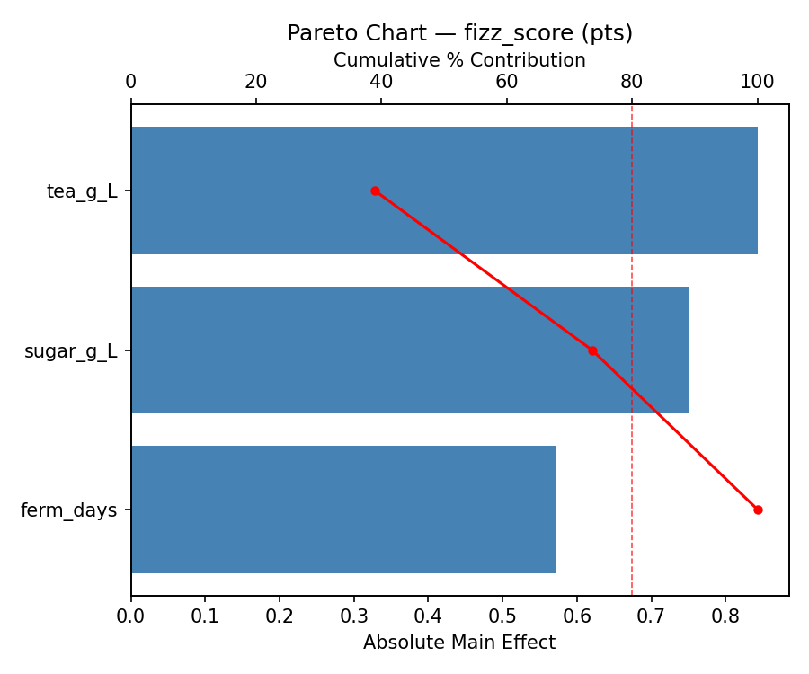
Main Effects Plot
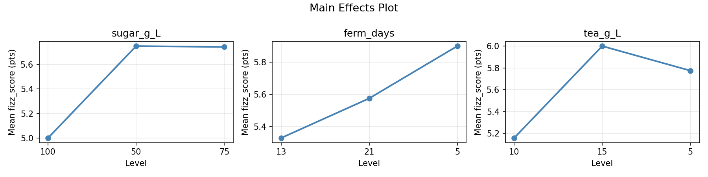
Normal Probability Plot of Effects
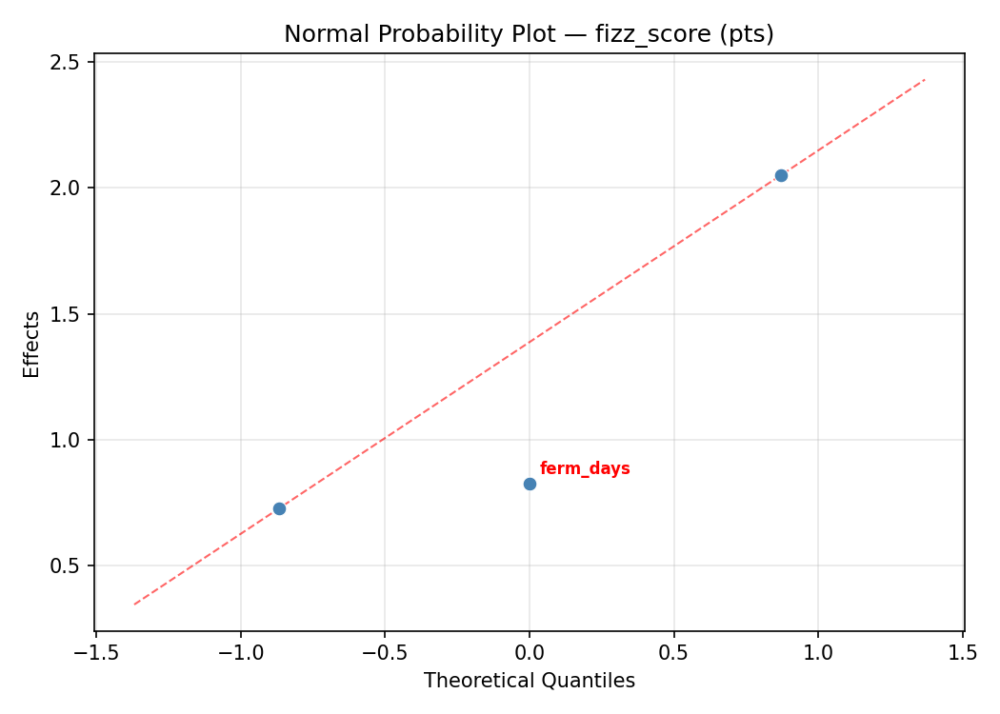
Half-Normal Plot of Effects
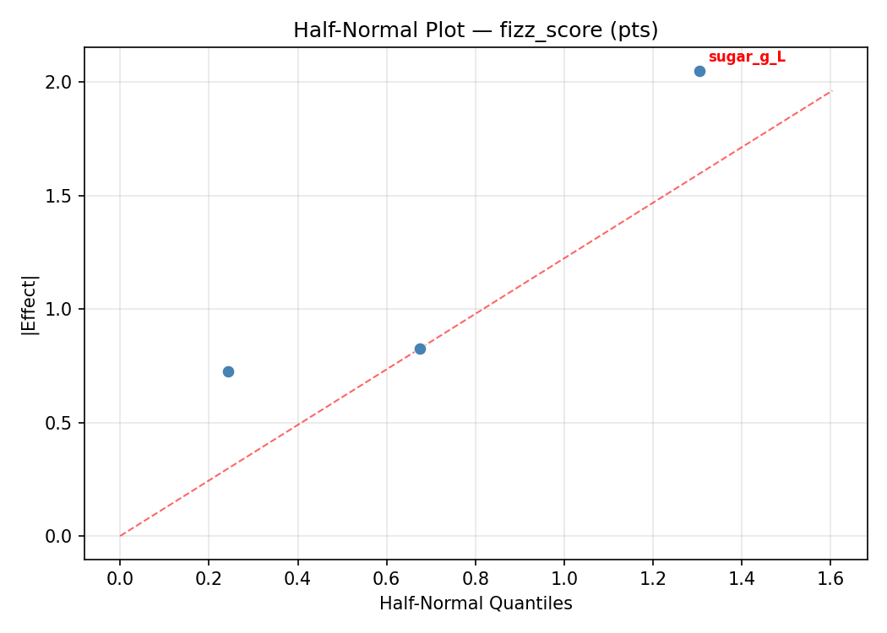
Model Diagnostics
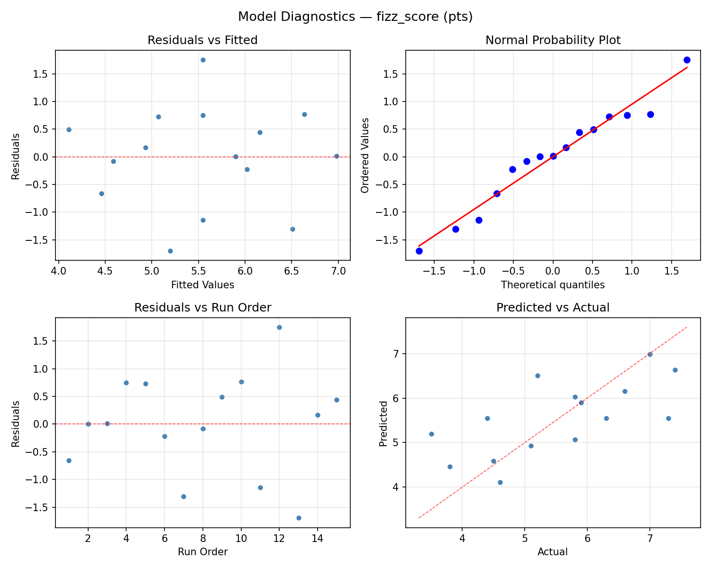
Response: flavor_complexity
Top factors: sugar_g_L (64.7%), tea_g_L (29.6%), ferm_days (5.7%).
ANOVA
| Source | DF | SS | MS | F | p-value |
|---|
| Source | DF | SS | MS | F | p-value |
| sugar_g_L | 2 | 7.7747 | 3.8873 | 6.074 | 0.0249 |
| ferm_days | 2 | 0.0800 | 0.0400 | 0.063 | 0.9398 |
| tea_g_L | 2 | 1.5633 | 0.7816 | 1.221 | 0.3444 |
| Lack | of | Fit | 6 | 1.1513 | 0.1919 |
| Pure | Error | 2 | 1.2800 | | |
| Error | 8 | 2.4313 | 0.6400 | | |
| Total | 14 | 11.8493 | 0.8464 | | |
Pareto Chart
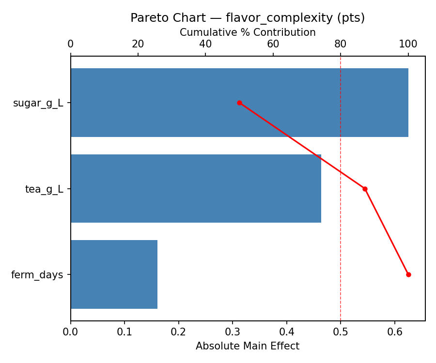
Main Effects Plot
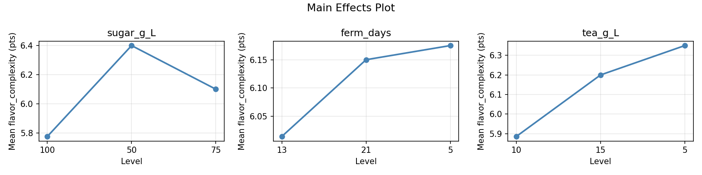
Normal Probability Plot of Effects
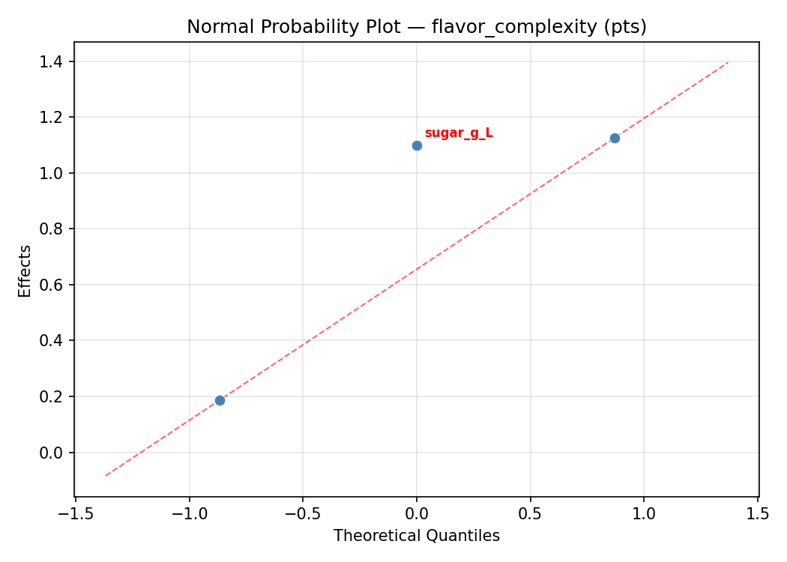
Half-Normal Plot of Effects
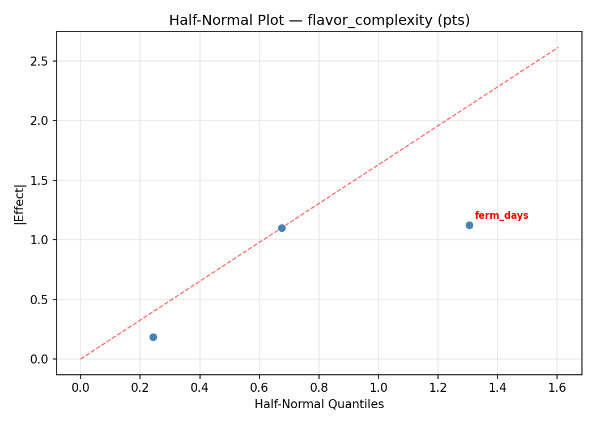
Model Diagnostics
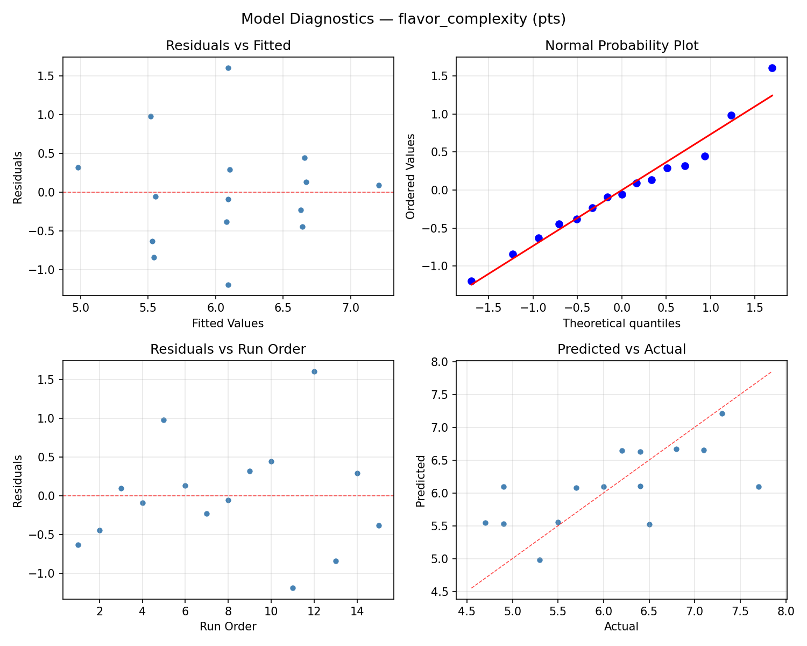
Response Surface Plots
3D surfaces fitted with quadratic RSM. Red dots are observed data points.
fizz score ferm days vs tea g L
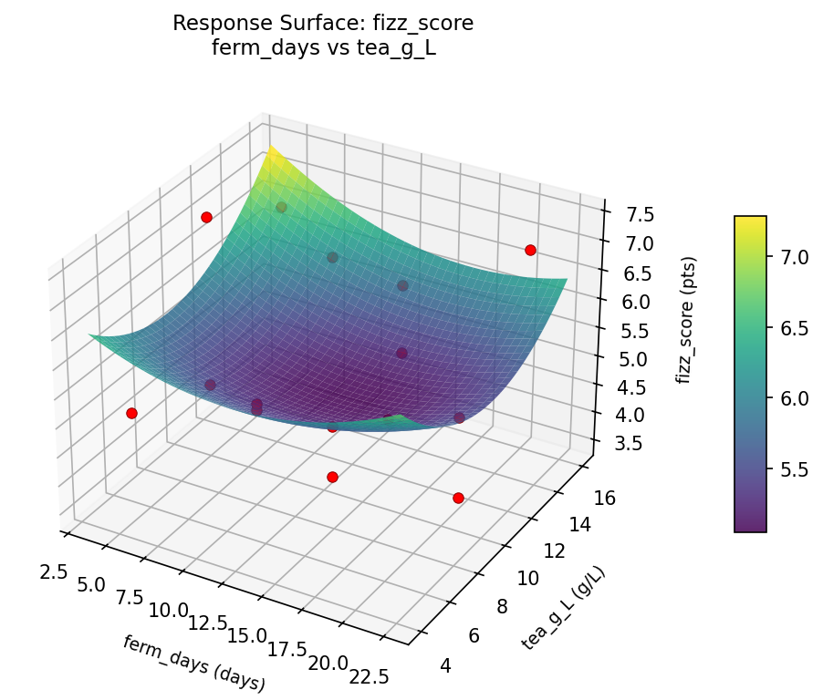
fizz score sugar g L vs ferm days
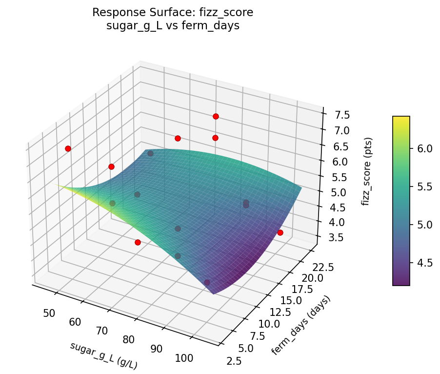
fizz score sugar g L vs tea g L
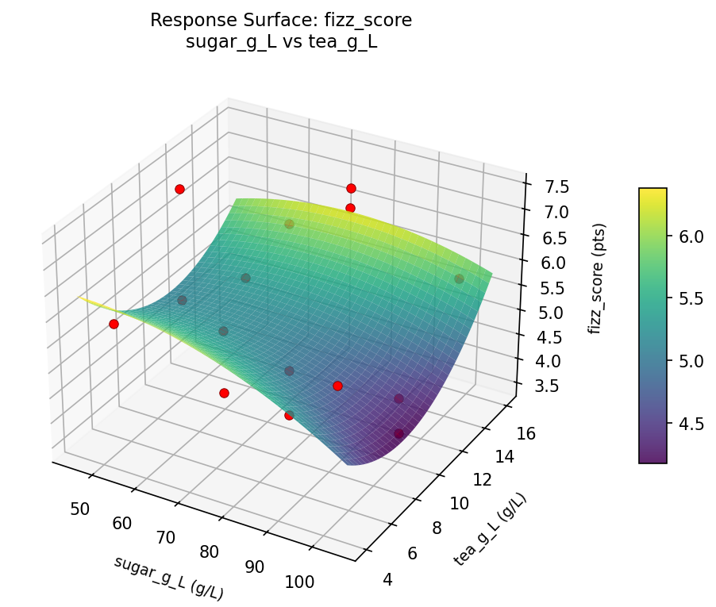
flavor complexity ferm days vs tea g L
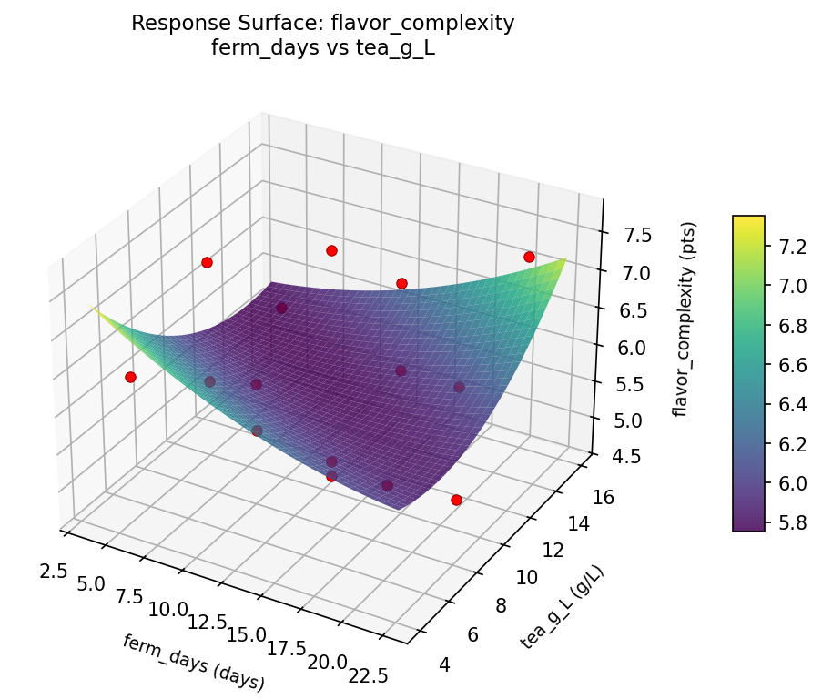
flavor complexity sugar g L vs ferm days
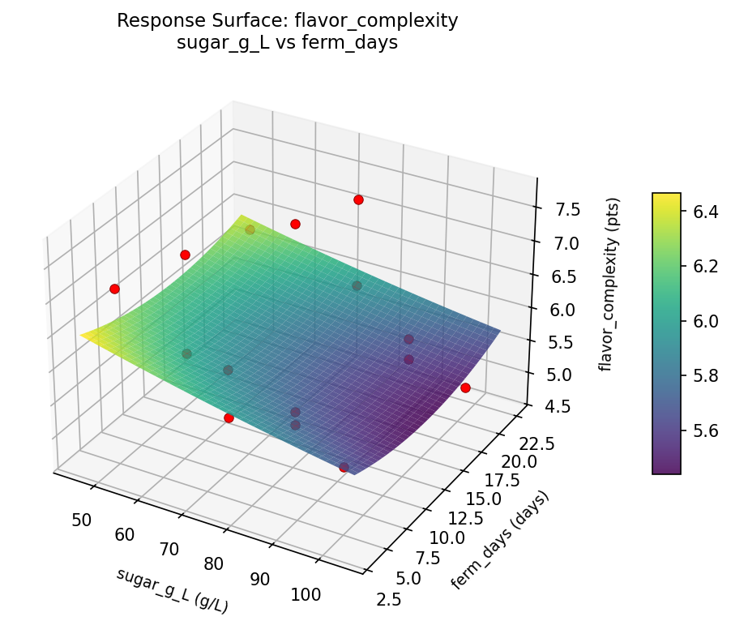
flavor complexity sugar g L vs tea g L
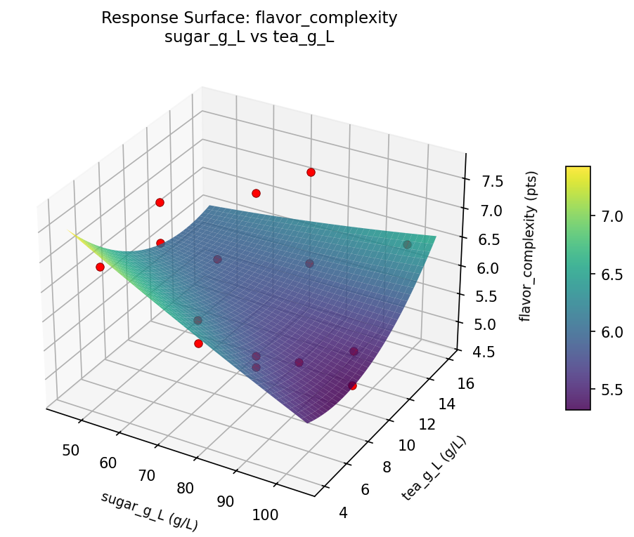
Multi-Objective Optimization
When responses compete, Derringer–Suich desirability finds the best compromise.
Each response is scaled to a 0–1 desirability, then combined via a weighted geometric mean.
Overall Desirability
D = 0.9428
Per-Response Desirability
| Response | Weight | Desirability | Predicted | Dir |
|---|
fizz_score |
1.5 |
|
7.30 0.9312 7.30 pts |
↑ |
flavor_complexity |
1.5 |
|
7.70 0.9545 7.70 pts |
↑ |
Recommended Settings
| Factor | Value |
|---|
sugar_g_L | 50 g/L |
ferm_days | 5 days |
tea_g_L | 10 g/L |
Source: from observed run #12
Trade-off Summary
Sacrifice = how much worse than single-objective best.
| Response | Predicted | Best Observed | Sacrifice |
|---|
flavor_complexity | 7.70 | 7.70 | +0.00 |
Top 3 Runs by Desirability
| Run | D | Factor Settings |
|---|
| #10 | 0.8588 | sugar_g_L=75, ferm_days=21, tea_g_L=15 |
| #3 | 0.8472 | sugar_g_L=75, ferm_days=13, tea_g_L=10 |
Model Quality
| Response | R² | Type |
|---|
flavor_complexity | 0.2610 | linear |
Full Multi-Objective Output
============================================================
MULTI-OBJECTIVE OPTIMIZATION
Method: Derringer-Suich Desirability Function
============================================================
Overall desirability: D = 0.9428
Response Weight Desirability Predicted Direction
---------------------------------------------------------------------
fizz_score 1.5 0.9312 7.30 pts ↑
flavor_complexity 1.5 0.9545 7.70 pts ↑
Recommended settings:
sugar_g_L = 50 g/L
ferm_days = 5 days
tea_g_L = 10 g/L
(from observed run #12)
Trade-off summary:
fizz_score: 7.30 (best observed: 7.40, sacrifice: +0.10)
flavor_complexity: 7.70 (best observed: 7.70, sacrifice: +0.00)
Model quality:
fizz_score: R² = 0.2749 (linear)
flavor_complexity: R² = 0.2610 (linear)
Top 3 observed runs by overall desirability:
1. Run #12 (D=0.9428): sugar_g_L=50, ferm_days=5, tea_g_L=10
2. Run #10 (D=0.8588): sugar_g_L=75, ferm_days=21, tea_g_L=15
3. Run #3 (D=0.8472): sugar_g_L=75, ferm_days=13, tea_g_L=10
Full Analysis Output
=== Main Effects: fizz_score ===
Factor Effect Std Error % Contribution
--------------------------------------------------------------
sugar_g_L 2.2571 0.3194 57.8%
tea_g_L 1.2107 0.3194 31.0%
ferm_days 0.4357 0.3194 11.2%
=== ANOVA Table: fizz_score ===
Source DF SS MS F p-value
-----------------------------------------------------------------------------
sugar_g_L 2 12.9802 6.4901 3.120 0.0996
ferm_days 2 0.4988 0.2494 0.120 0.8886
tea_g_L 2 4.1338 2.0669 0.994 0.4117
Lack of Fit 6 0.0000 0.0000 0.000 1.0000
Pure Error 2 4.1600 2.0800
Error 8 3.8046 2.0800
Total 14 21.4173 1.5298
=== Summary Statistics: fizz_score ===
sugar_g_L:
Level N Mean Std Min Max
------------------------------------------------------------
100 4 7.0000 0.4967 6.3000 7.4000
50 4 5.5000 0.4082 5.1000 5.9000
75 7 4.7429 1.0952 3.5000 6.6000
ferm_days:
Level N Mean Std Min Max
------------------------------------------------------------
13 7 5.6857 1.0869 3.8000 7.0000
21 4 5.2500 1.6623 3.5000 7.3000
5 4 5.6000 1.3589 4.5000 7.4000
tea_g_L:
Level N Mean Std Min Max
------------------------------------------------------------
10 7 6.0857 1.2171 3.8000 7.4000
15 4 5.2750 1.1871 4.4000 7.0000
5 4 4.8750 1.1786 3.5000 6.3000
=== Main Effects: flavor_complexity ===
Factor Effect Std Error % Contribution
--------------------------------------------------------------
sugar_g_L 1.6679 0.2375 64.7%
tea_g_L 0.7643 0.2375 29.6%
ferm_days 0.1464 0.2375 5.7%
=== ANOVA Table: flavor_complexity ===
Source DF SS MS F p-value
-----------------------------------------------------------------------------
sugar_g_L 2 7.7747 3.8873 6.074 0.0249
ferm_days 2 0.0800 0.0400 0.063 0.9398
tea_g_L 2 1.5633 0.7816 1.221 0.3444
Lack of Fit 6 1.1513 0.1919 0.300 0.8938
Pure Error 2 1.2800 0.6400
Error 8 2.4313 0.6400
Total 14 11.8493 0.8464
=== Summary Statistics: flavor_complexity ===
sugar_g_L:
Level N Mean Std Min Max
------------------------------------------------------------
100 4 7.0250 0.7274 6.0000 7.7000
50 4 6.4500 0.2517 6.2000 6.8000
75 7 5.3571 0.6188 4.7000 6.5000
ferm_days:
Level N Mean Std Min Max
------------------------------------------------------------
13 7 6.1714 0.7477 4.9000 7.3000
21 4 6.0250 1.4637 4.7000 7.7000
5 4 6.0250 0.8139 5.3000 7.1000
tea_g_L:
Level N Mean Std Min Max
------------------------------------------------------------
10 7 6.4143 0.9245 4.9000 7.7000
15 4 5.9750 1.0874 4.9000 7.3000
5 4 5.6500 0.7326 4.7000 6.4000
Optimization Recommendations
=== Optimization: fizz_score ===
Direction: maximize
Best observed run: #10
sugar_g_L = 100
ferm_days = 21
tea_g_L = 10
Value: 7.4
RSM Model (linear, R² = 0.0420, Adj R² = -0.2192):
Coefficients:
intercept +5.5467
sugar_g_L +0.0000
ferm_days -0.1500
tea_g_L +0.3000
RSM Model (quadratic, R² = 0.6504, Adj R² = 0.0212):
Coefficients:
intercept +4.7333
sugar_g_L +0.0000
ferm_days -0.1500
tea_g_L +0.3000
sugar_g_L*ferm_days +1.4000
sugar_g_L*tea_g_L -0.4000
ferm_days*tea_g_L -0.2500
sugar_g_L^2 -0.0417
ferm_days^2 +0.7583
tea_g_L^2 +0.8083
Curvature analysis:
tea_g_L coef=+0.8083 convex (has a minimum)
ferm_days coef=+0.7583 convex (has a minimum)
sugar_g_L coef=-0.0417 negligible curvature
Notable interactions:
sugar_g_L*ferm_days coef=+1.4000 (synergistic)
sugar_g_L*tea_g_L coef=-0.4000 (antagonistic)
Predicted optimum (from quadratic model, at observed points):
sugar_g_L = 75
ferm_days = 5
tea_g_L = 15
Predicted value: 7.0000
Surface optimum (via L-BFGS-B, quadratic model):
sugar_g_L = 50
ferm_days = 5
tea_g_L = 15
Predicted value: 8.7583
Model quality: Moderate fit — use predictions directionally, not precisely.
Factor importance:
1. tea_g_L (effect: 1.1, contribution: 51.2%)
2. ferm_days (effect: 0.9, contribution: 41.3%)
3. sugar_g_L (effect: 0.2, contribution: 7.4%)
=== Optimization: flavor_complexity ===
Direction: maximize
Best observed run: #12
sugar_g_L = 75
ferm_days = 5
tea_g_L = 15
Value: 7.7
RSM Model (linear, R² = 0.1268, Adj R² = -0.1113):
Coefficients:
intercept +6.0933
sugar_g_L +0.3875
ferm_days -0.0500
tea_g_L +0.1875
RSM Model (quadratic, R² = 0.7212, Adj R² = 0.2192):
Coefficients:
intercept +5.5333
sugar_g_L +0.3875
ferm_days -0.0500
tea_g_L +0.1875
sugar_g_L*ferm_days +0.7750
sugar_g_L*tea_g_L -0.1000
ferm_days*tea_g_L -0.1250
sugar_g_L^2 -0.3917
ferm_days^2 +0.6333
tea_g_L^2 +0.8083
Curvature analysis:
tea_g_L coef=+0.8083 convex (has a minimum)
ferm_days coef=+0.6333 convex (has a minimum)
sugar_g_L coef=-0.3917 concave (has a maximum)
Notable interactions:
sugar_g_L*ferm_days coef=+0.7750 (synergistic)
Predicted optimum (from quadratic model, at observed points):
sugar_g_L = 75
ferm_days = 5
tea_g_L = 15
Predicted value: 7.3375
Surface optimum (via L-BFGS-B, quadratic model):
sugar_g_L = 100
ferm_days = 21
tea_g_L = 5
Predicted value: 7.7333
Model quality: Good fit — general trends are captured, some noise remains.
Factor importance:
1. tea_g_L (effect: 1.0, contribution: 38.9%)
2. sugar_g_L (effect: 0.9, contribution: 35.1%)
3. ferm_days (effect: 0.7, contribution: 26.0%)